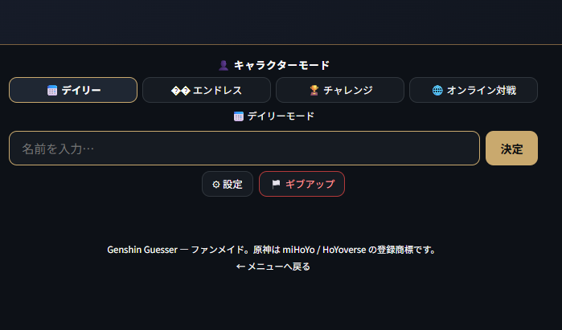
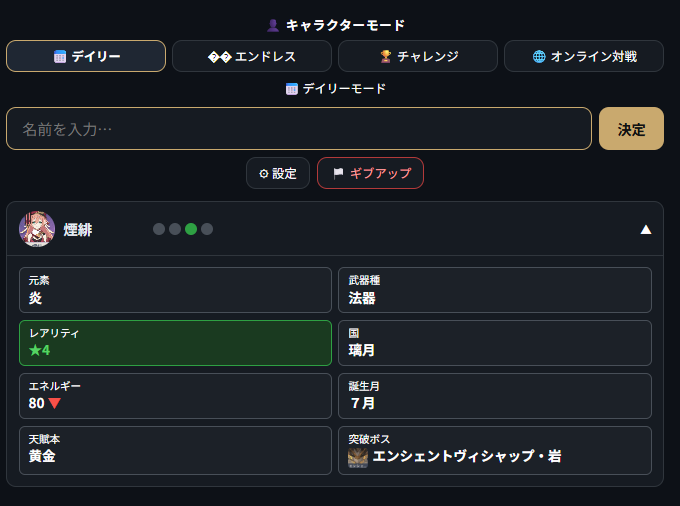
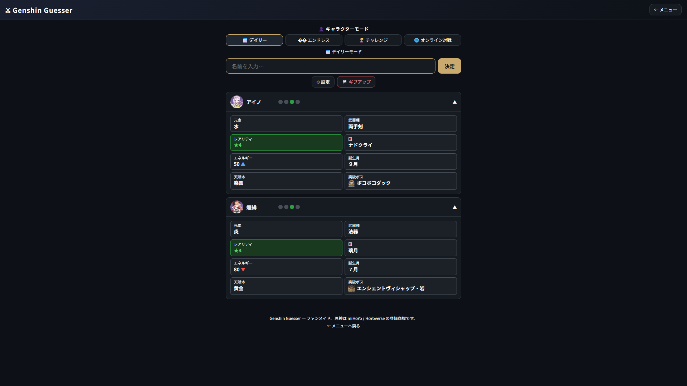
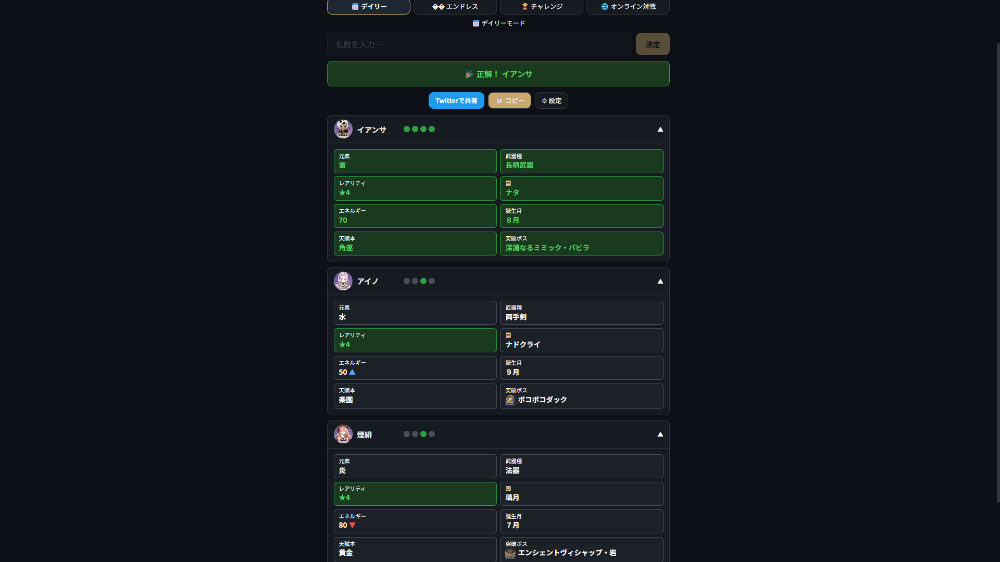
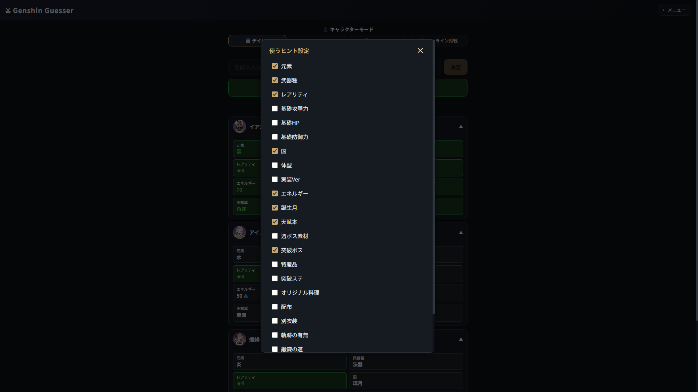

キャラクター（または武器）の名前を入力して、正解を推測しましょう！
回答を送信するたびに、正解との一致度が表示されます。
① プレイモードを選ぶ

「デイリー」「エンドレス」「チャレンジ」「オンライン対戦」から好きなモードを選んでゲームを開始します。チャレンジモードは5ミスで終了となる競技用の硬派なルールです。
② キャラクター名を入力して推測

入力欄にキャラクター名（例：「煙緋」）を入力して決定を押すと、そのキャラクターの属性（ステータス）が表示され、正解との一致判定が行われます。
③ 「色」と「矢印」を分析する

表示された色のヒントから、正解の範囲をさらに絞り込んでいきましょう。
④ 絞り込んだ情報から正解を導く！

蓄積した情報（雷元素、長柄武器、★4、ナタ、エネルギー70など）を完璧に満たすキャラクター「イアンサ」を入力し、見事正解！正解すると全ての項目が緑色に変化します。
⑤ 設定のカスタマイズとルール

デイリーやエンドレスでは、ギアマーク（⚙設定）から表示させたいヒント項目を自由にカスタマイズできます。※チャレンジモードは競技性向上のため固定ヒントでプレイします。
🟢 緑色：完全一致！正解と同じ属性です。
🟡 黄色：グループ一致（同じ国の特産品、天賦本、週ボス素材など、惜しい状態です）。
⚪ 灰色：一致していません。
▲ / ▼：数値が正解よりも「高い」か「低い」かを示します。